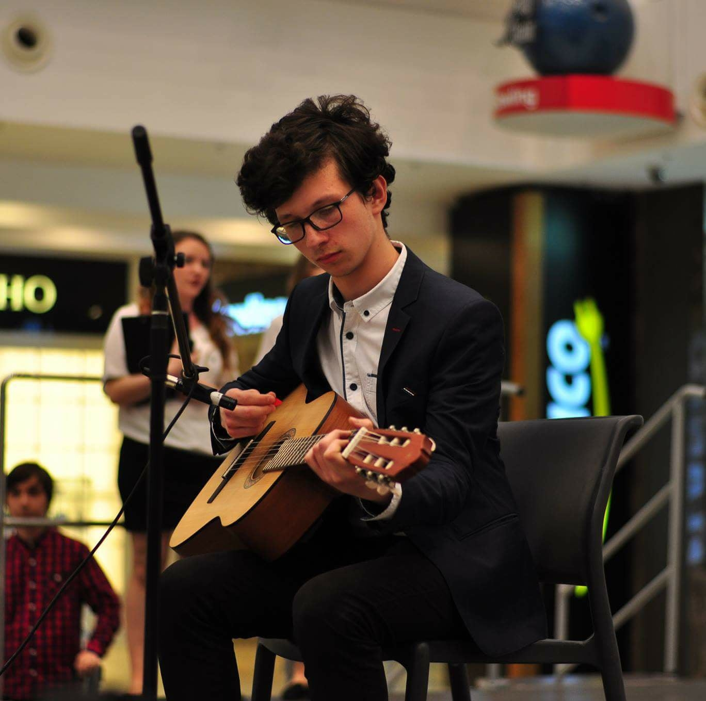
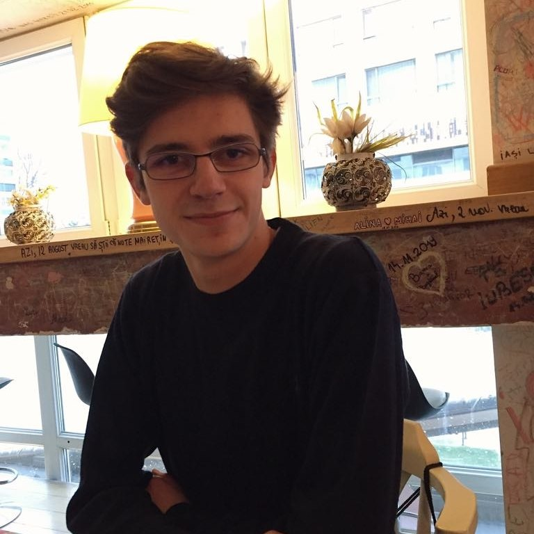

Blajut Cristin-Marian este student in anul 2 la Facultatea de Informatica Iasi.
S-a nascut pe 7 septembrie 2001.
Ii plac sportul (in special fotbalul) si jocurile pe PC.
Visul sau este sa ajung jucator profesionist de League of Legends.
Locuieste in Holboca, Iasi.
Cristin poate fi contactat prin:
Email: blajut.cristin12@gmail.com
Facebook: Cristin Marian Blajut (blajut.cristinmarian)
Instagram: el_ciobandante

Roca Dominic-Eduard este student in anul 2 la Facultatea de Informatica Iasi.
Este pasionat de muzica, poezie, ethical hacking si hardware security.
Visul sau este de a prezenta la mari conferinte de cyber security precum DefCON sau Black Hat.
Dominic poate fi contactat prin:
Email: rocadominic@gmail.com
Facebook: Dominic Roca (roca.dominic)
Instagram: roca.dominic

Onofrei Tudor-Cristian este student in anul 2 la Facultatea de Informatica Iasi.
Nascut pe data de 19 noiembrie 1999.
Este pasionat de matematica, informatica, pedagogie si crearea de softuri educationale.
Cel mai mare vis al sau este sa devina profesor, pentru a ajuta mult mai multa lume prin ceea ce face.
Locuieste in Harlau, judetul Iasi.
Tudor poate fi contactat prin:
Email: onofrei.tudorcristian@gmail.com
Facebook: Tudor Onofrei (DareTudorel)
Instagram: tudor.onofrei